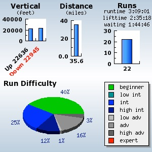

Mid X-Mas Report
Wednesday, December 28, 2011
No snow for a week....but still skiing. Alli says she’s gonna continue to ski in the dress until it snows.
Took off early today to hit some runs....WP opened Pioneer earlier in the week (even though no new snow...), and reported Spike, Sterling, and Narrow Gauge open. The bad news...other than Narrow Gauge, all of it was *VERY* sketchy...I don’t think they really should have opened ‘em up. Here’s a pic from the newly opened Rainbow Cut bottom:

Günter and Max came out later in the day, and we played around some. Here’s Max, taking a break and playing in the snow up by Hi-Lo:

And here’s a movie of us playing around. A little more mellow than usual, but that’s the kind of day it was...